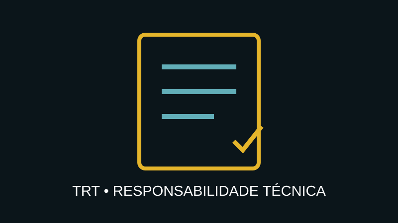

Responsabilidade Técnica & Conformidade
Formalização, acompanhamento e fiscalização de serviços técnicos dentro das atribuições profissionais aplicáveis.

Por que formalizar?
Serviços técnicos precisam ter escopo, responsabilidade e documentação compatíveis com sua natureza. O TRT é um instrumento de formalização da responsabilidade técnica quando aplicável, contribuindo para rastreabilidade e segurança documental.
Do documento ao acompanhamento
A solução pode envolver análise preliminar do serviço, enquadramento técnico, emissão do TRT, acompanhamento, inspeções, registros de ocorrências, recomendações e dossiê técnico, conforme contratação e atribuições profissionais.
Entregáveis
- análise e enquadramento técnico;
- TRT aplicável;
- plano de acompanhamento;
- registros e relatórios técnicos;
- documentação de não conformidades;
- Dossiê de Responsabilidade Técnica.
Importante
O serviço é prestado exclusivamente dentro das atribuições profissionais e das regras do sistema CFT/CRTs aplicáveis ao caso. O TRT não deve ser entendido como garantia jurídica absoluta; ele formaliza a responsabilidade técnica correspondente ao serviço registrado.